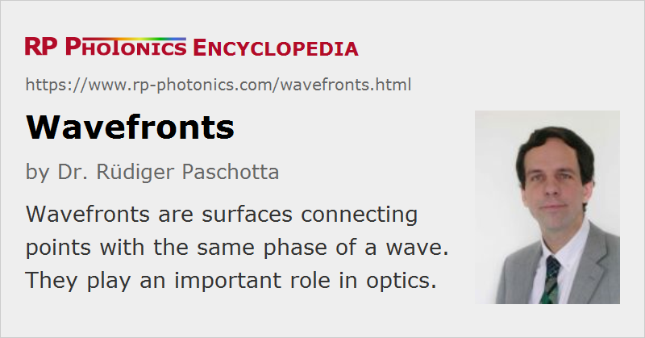

Wavefronts
Definition: surfaces connecting points with the same phase of a wave
German: Wellenfronten
How to cite the article; suggest additional literature
Author: Dr. Rüdiger Paschotta
Wavefronts are surfaces connecting points with the same phase of a monochromatic wave. For example, one may select all those points where the maximum of the oscillating quantity within an oscillation cycle (for example, the maximum air pressure for a sound wave or the maximum positive electric field strength for an optical wave) is reached. Any other phase value could also be chosen, however.
The mathematically simplest example is that of a plane wave, where the wavefronts are planes. As a physically more realistic example, which is also a quite common case in optics, we can take a Gaussian beam. Figure 1 shows its color-coded complex amplitude profile:

Figure 2 shows the corresponding wavefronts, chosen to be the points with the darkest red:

These wavefronts are valid only for a certain moment in time; they propagate with the phase velocity. (For light propagating in vacuum or air, the phase velocity is a little less than 300 000 km/s.) In a medium, that velocity is in most cases lower, in a few cases higher (→ superluminal transmission), and it may deviate from the group velocity, which is the velocity of moving wave packets.
In our simple example, the wavefronts are exactly flat in the beam focus (in the middle of the diagram). This is not the case for light beams with non-perfect beam quality (see below).
In contrast to the amplitude image, the wavefronts do not contain any information on wave amplitudes, but only on the phase structure. In practice, one often stops drawing them in outer regions of a beam where the optical intensity becomes very weak, or where there are no longer of interest.
Generally, the spacing between subsequent wavefronts is taken to be the wavelength. Precisely, however, this holds only for plane waves, not e.g. for Gaussian beams.
Various Details
Wavefronts play an important role in wave optics. Note, however, that wavefronts are generally defined only for monochromatic waves, since they are based on the concept of the phase, which is not clearly defined for polychromatic waves. In such cases, one can still consider the wavefronts for particular optical frequency components.
The wave vector is always perpendicular to the wavefronts. For general beams with curved wavefronts, its direction and magnitude may depend on the position.
In isotropic optical materials, the optical energy always propagates in a direction parallel to the wave vector, i.e., perpendicular to the wavefronts. This is generally not true in anisotropic media, where one may have a spatial walk-off. That effect is relevant for nonlinear frequency conversion processes in certain nonlinear crystal materials; generally, those need to be anisotropic.
The essential function of various types of optical elements is to modify the wavefronts of light beams. For example, a lens can change the wavefront curvature such that an originally collimated beam is focused, or an originally divergent beam is collimated or refocused. Strong wavefront changes can also occur in the context of refraction and diffraction of light. For example, wavefronts generally modify their direction at optical interfaces where refraction occurs.
In many cases, it is technically preferable to maintain wavefronts with a smooth and simple shape, e.g. close to a parabolic or spherical shape. This together with a smooth amplitude profile of a laser beam, for example, results in a high beam quality, which implies that such a wave can be relatively well focused to a small area. Wavefront quality is also associated with the degree of spatial coherence.
Many lasers can produce beams with very high beam quality. However, various effects (e.g. thermal lensing in laser crystals or poor-quality optical elements) can cause more or less serious wavefront distortions, also called wavefront aberrations or wavefront errors. Optical aberrations are also an important topic in the context of optical imaging.
Wavefronts and wavefront errors are of particular importance in the area of interference phenomena, where the optical phase is essential.
There are various types of optical wavefront sensors (e.g. Shack–Hartmann wavefront sensors) with which one can measure the shape of wavefronts. Adaptive optics deals with methods for correcting wavefronts based on measuring them and acting on them, for example with deformable mirrors.
Wavefronts can be strongly scrambled using various kinds of optical diffusers.
Questions and Comments from Users
Here you can submit questions and comments. As far as they get accepted by the author, they will appear above this paragraph together with the author’s answer. The author will decide on acceptance based on certain criteria. Essentially, the issue must be of sufficiently broad interest.
Please do not enter personal data here; we would otherwise delete it soon. (See also our privacy declaration.) If you wish to receive personal feedback or consultancy from the author, please contact him e.g. via e-mail.
By submitting the information, you give your consent to the potential publication of your inputs on our website according to our rules. (If you later retract your consent, we will delete those inputs.) As your inputs are first reviewed by the author, they may be published with some delay.
See also: wave optics, optical phase, plane waves, laser beams, monochromatic light, Shack–Hartmann wavefront sensors, diffusers
and other articles in the category general optics
|  |
If you like this page, please share the link with your friends and colleagues, e.g. via social media: 


These sharing buttons are implemented in a privacy-friendly way! |
2020-07-03
Do smooth wavefronts imply that the spatial intensity profile remains smooth as well?
Answer from the author:
Without having a mathematical proof, I think so. If you numerically simulate beam propagation with a modulated intensity profile and initially flat phase fronts, the phase fronts will soon get scrambled.